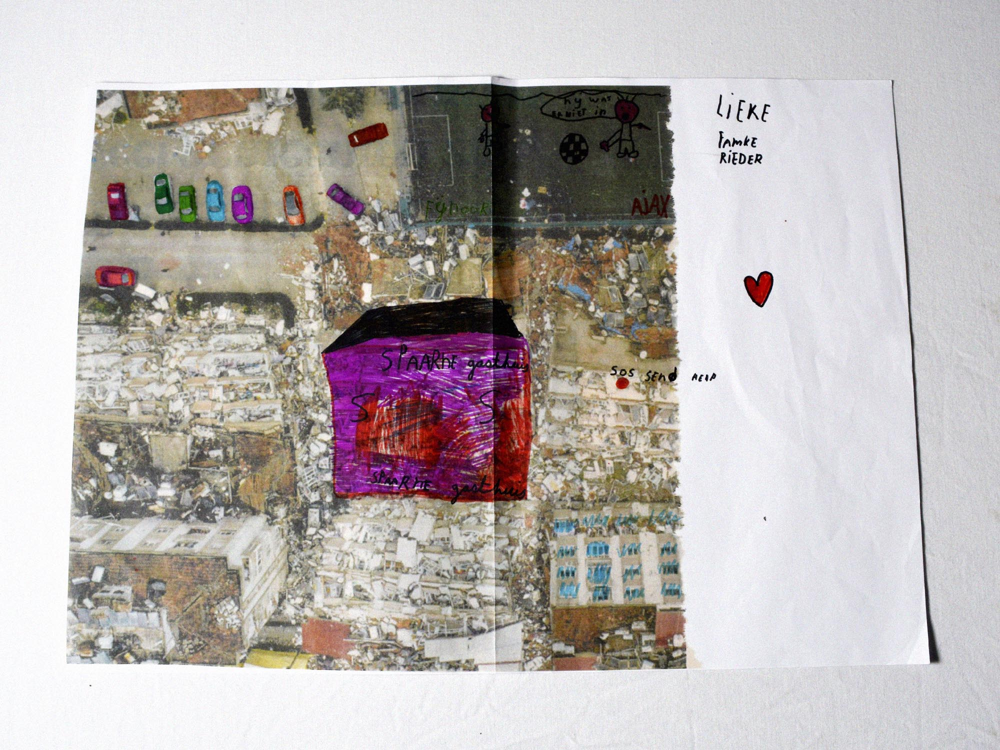
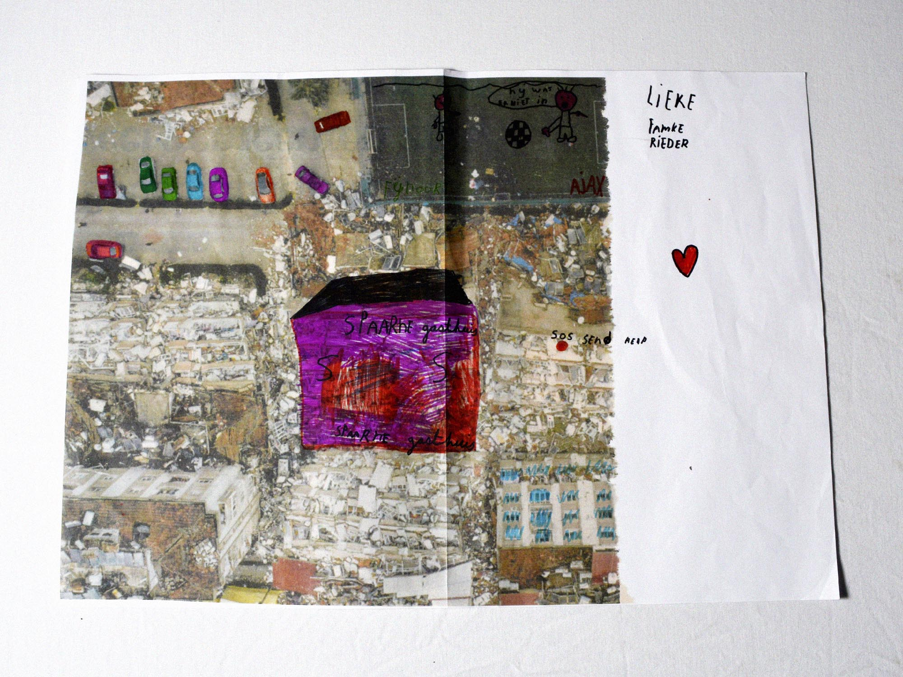

Ver van M'n Bed
De aardbeving in Turkije op 6 februari 2023 was voor veel van mijn klasgenoten het gekozen artikel voor de opdracht gegeven door Juri Veerman; bekend grafisch vormgever en mijn destijdse docent.
Een eindresultaat dat uiteindelijk tijdens een expositie in Utrecht werd tentoongesteld, begon bij het verzamelen van krantenknipsels. Deze krantenknipsels werden al snel vervormd en bewerkt, allemaal analoog. De satellietfoto van de ramp in Turkije heeft een bizar contrast, namelijk niet alle delen van de straat zijn beschadigd. Deze foto heb ik als kleurplaat laten gebruiken door mijn buurmeisje, dit gaf snel het idee van een bordspel. Dit bordspel heb ik zo gedurfd mogelijk proberen uit te werken, de vorm van een bordspel geeft ook de 'chance'-waarde aan van de willekeurigheid van de natuur.
Een 'Monopoly'-uitstraling om de corrupte regering te benadrukken, een oplopend dodental bij elke stap die de speler zet, pottenkijkers als pionnen, spelkaarten met artikelen als quotes en een titel die zegt dat de aandacht voor rampen vaak snel verwatert onder de Nederlanders.
Ondanks het thema en de manier van vertellen op het randje is, werd de boodschap goed ontvangen en het eindproduct gewaardeerd.